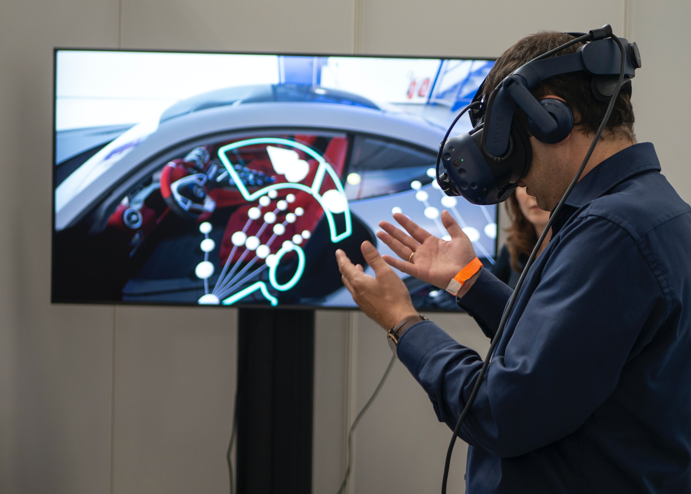

- 
-

-
Photo by Christine Sandu on Unsplash -
Photo by David Dvořáček on Unsplash
Photo by Christine Sandu on Unsplash
Photo by David Dvořáček on Unsplash
The invention of virtual reality has revolutionized the type of games we as humans are now able to play. We are now able to play games that are more immersive than ever before. This is because VR allows us to transport players into a digital world displayed through VR headsets. Not only does this enhance the realism of first person games, but it makes the player feel as though they embody their character. VR also allows for much more tactile controls in games. Instead of pulling a trigger or pressing a key on a keyboard to perform an action, players can now actually perform that action with their hands in the game. This allows for players to actually feel like they are doing an action instead of just instructing their character to perform it. This has allowed games to implement much more realistic shooting and combat mechanics.
Virtual reality is also being used in arcades to provide location-based gameplay experiences. These experiences are usually made for multiple players and use cutting edge hardware to allow players to play VR games together in a shared space. These experiences are designed so players can walk around freely and are not constrained by the physical space they are in, like they would be at their house. These games may also have alternate controllers meant to interface with arcade VR games, such as physical gun models that the player uses to control the virtual gun they are holding in the game. These virtual reality experiences are best enjoyed with friends. They allow players to operate in the same physical and virtual space, which lets players to experience a greater form of comradery with their companions, and adds to the realism of the gameplay. Overall, these factors combine to make VR arcades an engaging and entertaining experience for players.